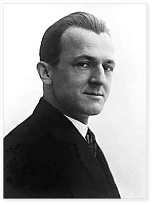
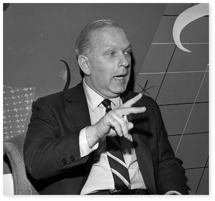

폴 랜드 초기 작품에
많은 영향을 끼친
예술가

George Grosz
게오르게 그로츠
폴 랜드에게 디자인을 가르쳐준 사람은 아트 스튜던트
리그에 강사로 있던 다다주의자 조지 그로스즈(George
Grosz)였는데, 그는 폴 랜드의 초기 작품에 많은 영향을 끼
쳤다. 폴 랜드가 디자인 공부를 할 당시의 아트스쿨은 거의
순수미술(Fine Art)에 관한 것이었고, 단지 몇 학교만이 상
업미술(Commercial Art)이라고 불려진 응용미술
(Applied Art)형태의 실험적인 연구를 하고 있었다.
그 당시 지배적이던 예술철학은 화가나 공예가로서 재능
이 부족한 학생은 상업미술가로 진로를 바꾸어야 한다는
것이었다. 이처럼 당시 미국의 디자인 학교에는 체계적인
교육 프로그램이 없었기 때문에 그는 학교교육보다는 독
학으로 디자인을 공부했다고 할 수 있으며, 그래픽 디자인
초기 시대의 많은 다른 디자이너들처럼 스스로 자신의 예
술세계를 만들어 나갔고 그것을 확고히 했다.
선입관을
갖고 있지 않은
카피라이터

William Bernbach
윌리엄 번바크
폴 랜드가 윌리엄 웨인트라브사에서 경력을 쌓아가
고 있을 즈음 윌리엄 번바크(William Bernbach)
를 만나게 되었는데, 폴 랜드는 윌리엄 번바크와의
첫 만남을 “미대륙을 발견한 콜럼버스와 유사한
것”이었다고 기술하고 있다. 그리고 계속해서 말하
기를 그 만남은 “시각적인 사상을 이해하며, 광고란
반드시 이렇게 보여야 한다는 선입관을 갖지 않은
아트디렉터와 카피라이터의 최초의 만남이었다”고
말했다. 윌리엄 번바크는 1949년에 동료들과 함께
도일 덴 번바크(Doyle Dane Bernbach)를 세웠는데 그는
그곳에서 카피라이터로 일했다. 그들은 그
당시 광고 디자인의 개념을 무너뜨리고 미래 광고
의 방향성을 설정하는 중요한 작업을 했다.
윌리엄 번바크가 그레이 에이젼시(Gray Agency)
로 옮긴 몇년 후, 폴 랜드와 번바크는 뉴욕 오바치즈
(Ohrbach's)백화점의 디자인을 위해 다시 만났고,
몇 년동안 그들은 현재까지도 유명한 신문 광고를
열정적으로 창출했다. 과거의 카피라이터가 헤드라
인과 바디카피를 먼저 쓰고 난 후 그것을 가지고 아
트디렉터가 레이아웃을 하던 식의 광고에서 벗어나
번바크의 기획아래 폴 랜드는 디자인을, 번바크는
카피를 만듬으로써 광고에 있어서의 전통적 관습을
타파하였다. 이들은 이러한 사상이 최초로 드러난
뉴욕 오바치즈 백화점의 광고캠페인을 2년 이상 제
작함으로써 디자인에 재미있는 재담과 말의 유희을
보여 주었는데, 이는 그는 디자인 작업외에도 교육
과 저술활동을 병행하여 쿠퍼 유니온(Cooper Union)
과 프랫 인스티튜트(Pratt Institute)에서 그래픽
디자인을 가르쳤고, 예일(Yale)대학에서는 30년 넘게
그래픽 디자인과의 교수로 재직했다.